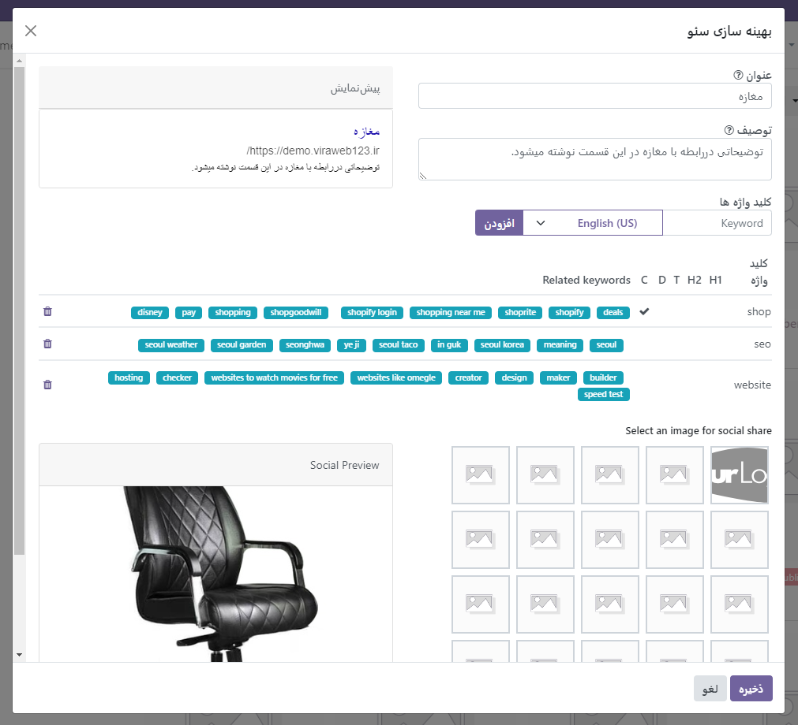
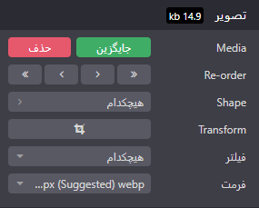

بهینه سازی وبسایت¶
بهینهسازی موتورهای جستجو که اغلب به اختصار SEO نامیده میشود، یک استراتژی بازاریابی دیجیتال برای بهبود دید و رتبه وبسایت در نتایج موتورهای جستجو (مثلاً در گوگل) است. این شامل بهینهسازی عناصر مختلف در وبسایت شما، از جمله محتوا، اشتراکگذاری اجتماعی، URLها، تصاویر و سرعت صفحه است.
Tip
Odoo چندین ماژول را برای کمک به ایجاد محتوای وبسایت خود ارائه میدهد، مانند تجارت الکترونیک، وبلاگ، آموزش الکترونیکی و انجمن.
همه تمهای Odoo برای ارائه کارآمد بر اساس دستگاه: دسکتاپ، تبلت یا موبایل به Bootstrap چارچوب CSS متکی هستند که بر رتبهبندی در موتورهای جستجو تأثیر مثبت میگذارد.
بهینه سازی محتوا¶
برای بهینهسازی سئو صفحات وب، ابتدا به صفحه مورد نظرتان دسترسی پیدا کنید. سپس به بخش “وبسایت” بروید و از آنجا به بخش “سئو” بروید.
برچسب های متا¶
برچسبهای متا یکی از عناصر HTML هستند که اطلاعات مهمی را برای موتورهای جستجو و بازدیدکنندگان وب سایت ارائه میدهند. این برچسبها به موتورهای جستجو کمک میکنند تا محتوای یک صفحه وب را بهتر درک کنند و بازدیدکنندگان را با محتوای جذاب به وبسایت جذب کنند. در Odoo دو نوع برچسب متا وجود دارد:
برچسب عنوان (Title Tag): این برچسب عنوان صفحه وب را مشخص میکند و به عنوان یک لینک قابل کلیک در نتایج موتورهای جستجو نمایش داده میشود. برچسب عنوان باید مختصر، توصیفی و مرتبط با محتوای صفحه باشد. میتوانید عنوان صفحه وب خود را بهروز کنید یا از مقدار پیشفرض بر اساس محتوای صفحه استفاده کنید.
برچسب توضیحات (Description Tag): این برچسب محتوای صفحه وب را خلاصه میکند و اغلب در زیر عنوان در نتایج موتورهای جستجو نمایش داده میشود. برچسب توضیحات برای تشویق کاربر به بازدید از صفحه استفاده میشود. میتوانید توضیحات صفحه وب خود را بهروز کنید یا از مقدار پیشفرض بر اساس محتوای صفحه استفاده کنید.
Tip
کارت پیشنمایش نحوه نمایش برچسبهای عنوان و توضیحات را در نتایج جستجو نشان میدهد. این کارت شامل عنوان صفحه، توضیحات مختصری از محتوای صفحه، و URL صفحه میباشد. این اطلاعات به کاربران کمک میکند تا محتوای صفحه و اهمیت آن را قبل از کلیک بر روی لینک بیشتر بفهمند.
کلید واژه ها¶
کلمات کلیدی یکی از عناصر اساسی سئو هستند. وبسایتی که به خوبی برای موتورهای جستجو بهینه شده است، به زبان بازدیدکنندگان بالقوه صحبت میکند و کلمات کلیدی برای سئو به آنها کمک میکند تا به وبسایت شما متصل شوند.
برای استفاده از کلمات کلیدی، میتوانید آنها را در قسمت “Keyword” وارد کنید و بر روی “ADD” کلیک کنید تا نحوه استفاده از آنها در سطوح مختلف محتوایتان مشخص شود (مانند H1، H2، عنوان صفحه، توضیحات صفحه و محتوای صفحه) و جستجوهای مرتبط در گوگل را مشاهده کنید.
همچنین، این ابزار ممکن است کلمات کلیدی مرتبط را برای هدایت ترافیک وبسایت شما پیشنهاد دهد. هر چه کلمات کلیدی بیشتری در صفحه وب شما وجود داشته باشد، بهتر است.
Note
اکیداً توصیه می شود که فقط از یک عنوان H1 در هر صفحه برای سئو استفاده کنید.
تصویر برای اشتراک گذاری اجتماعی¶
وقتی شما صفحهی خود را در رسانههای اجتماعی به اشتراک میگذارید، اغلب تصویر لوگو یا تصویر پیشفرضی که بهطور خودکار انتخاب میشود، نمایش داده میشود. اما شما میتوانید هر تصویر دیگری را نیز با کلیک بر روی فلش رو به بالا آپلود کنید و آن را جایگزین تصویر لوگو کنید. این کار به شما امکان میدهد تا تصویری مرتبطتر یا جذابتر را برای نمایش در رسانههای اجتماعی انتخاب کنید، که ممکن است جلب توجه بیشتری داشته باشد.
Tip
بطور خلاصه میتوان گفت که کارت پیشنمایش اجتماعی نحوه نمایش اطلاعات صفحه هنگام اشتراکگذاری را نمایان میسازد. همچنین، با تغییر عنوان یک پست وبلاگ یا نام یک محصول، تغییرات به طور خودکار در تمامی بخشهای وبسایت شما اعمال میشود. استفاده از تغییر مسیر 301 در وبسایتهای خارجی باعث میشود که پیوندهای قدیمی همچنان کارکنانه عمل کنند و بهینهسازی موتورهای جستجو را حفظ کنند.
تصاویر¶
اندازه تصاویر تاثیر بسزایی در سرعت صفحه دارد که معیاری ضروری برای موتورهای جستجو برای بهینه سازی رتبه بندی سئو است.
Note
رتبه وب سایت خود را با استفاده از Google Page Speedیا Pingdom Website Speed Test مقایسه کنید .
Odoo به صورت خودکار تصاویری که بارگذاری میشوند را فشرده کرده و به فرمت Webp تبدیل میکند. این فرمت فایل باعث کوچکتر شدن اندازه تصاویر میشود که در نتیجه سرعت بارگذاری صفحه را افزایش میدهد و در نتیجه رتبهبندی بهتری در موتورهای جستجو به دست میآورد. تمام تصاویر استفاده شده در تمهای رسمی Odoo نیز به طور پیشفرض فشرده میشوند. اما اگر از یک تم شخص ثالث استفاده میکنید، ممکن است تصاویری ارائه دهد که به طور موثر فشرده نشده باشند و در نتیجه بارگذاری صفحه را کند کنند. برای تغییر یک تصویر در وبسایت خود، ابتدا تصویر مورد نظر را انتخاب کنید. سپس روی گزینه “Edit” یا “ویرایش” کلیک کنید. سپس به تب “Customize” یا “شخصیسازی” بروید و در بخش “Image Format” یا “فرمت تصویر” تنظیمات مورد نظر را اعمال کنید.
Important
استفاده از تگهای Alt برای دادن توضیحات به تصاویر در وبسایت، به منظور ارائه زمینهای از محتوای تصویر به کاربران و خزندههای موتورهای جستجو استفاده میشود. این توضیحات کلیدی هستند به منظور بهینهسازی سئو، زیرا به موتورهای جستجو اطلاع میدهند که تصویر چه موضوعی را نشان میدهد و به آنها اجازه میدهند تا تصویر را به درستی فهرستبندی کنند. اضافه کردن کلمات کلیدی به تگهای Alt در بخش توضیحات، از دید SEO بسیار حیاتی است. این توضیحات به صورت مستقیم به کد HTML تصویر اضافه میشوند و هنگامی که تصویر برای هر دلیلی قابل نمایش نباشد، به کاربران نمایش داده میشوند.
خصوصیات پیشرفته¶
نشانهگذاری دادههای ساختیافته یک روش است که برای تولید قطعههای غنی در نتایج موتورهای جستجو به کار میرود. این فرایند به وبسایتها امکان میدهد دادههای ساختیافته را به رباتهای موتورهای جستجو ارسال کنند و این رباتها محتوای شما را بهتر درک کرده و نتایج جستجوی بهتری ارائه دهند.
به طور پیشفرض، Google از بسیاری از ریچ اسنیپها برای انواع محتوا، از جمله نظرات، افراد، محصولات، کسبوکارها، رویدادها و سازمانها پشتیبانی میکند. Microdata مجموعهای از برچسبها است که با HTML5 معرفی شدهاند و به موتورهای جستجو کمک میکنند تا محتوای شما را بهتر درک کنند و آن را به روشی مرتبط نمایش دهند. Odoo همانطور که در مشخصات schema.org برای رویدادها، محصولات تجارت الکترونیک، پستهای انجمن و آدرسهای تماس تعریف شده است، microdata را پیادهسازی میکند. این امکان را به شما میدهد که صفحات محصول خود را با استفاده از اطلاعات اضافی مانند قیمت و رتبهبندی یک محصول در Google نمایش دهید.
robots.txt¶
فایل robots.txt به خزندههای موتور جستجو میگوید که به کدام URLها میتوانند در سایت شما دسترسی داشته باشند تا محتوای آن را فهرستبندی کنند. این عمدتاً برای جلوگیری از بارگیری بیش از حد سایت شما با درخواستها استفاده میشود.
وقتی وبسایت شما را ایندکس میکند، موتورهای جستجو برای اولین بار به فایل robots.txt نگاه میکنند. Odoo به طور خودکار یک فایل robot.txt در دسترس ایجاد میکند به آدرس mydatabase.odoo.com/robots.txt.
با ویرایش فایل robots.txt، میتوانید کنترل کنید که کدام صفحات سایت برای خزندههای موتورهای جستجو قابل دسترسی باشد. برای افزودن دستورالعملهای سفارشی به فایل، به بخش “وبسایت”، سپس “پیکربندی” و “تنظیمات” بروید، به بخش “SEO” پایین بروید و روی “Edit robots.txt” کلیک کنید.
نقشه سایت به تمام صفحات وبسایت و ارتباطات آنها با یکدیگر اشاره میکند و به موتورهای جستجو اطلاعاتی دربارهی ساختار وبسایت را ارائه میدهد. Odoo یک فایل /sitemap.xml تولید میکند که شامل همه URLهای وبسایت میباشد. به دلایل بهینهسازی عملکرد، این فایل هر 12 ساعت یکبار ذخیره و بهروز میشود. این فایل نقشه سایت به موتورهای جستجو اطلاعاتی دربارهی صفحات موجود در وبسایت شما و روابط بین آنها را ارائه میدهد، که به بهبود فرآیند شناسایی و فهرستبندی صفحات توسط موتورهای جستجو کمک میکند.
Note
اگر وب سایت شما صفحات زیادی دارد، Odoo به طور خودکار یک فایل فهرست نقشه سایت، با رعایت پروتکل sitemaps.org ایجاد می کند و URL های نقشه سایت را در 45000 تکه در هر فایل گروه بندی می کند.
هر ورودی در نقشه سایت شامل سه ویژگی است که به طور خودکار محاسبه میشوند:
<loc>: آدرس یک صفحه وب. این فیلد نشان میدهد که صفحه مورد نظر در کجا قرار دارد.<lastmod>: آخرین تاریخ تغییر منبع. این ویژگی نشان میدهد که آخرین باری که منبع مربوطه تغییر کرده است، کی بوده است. برای مثال، برای صفحهی مربوط به یک محصول، این میتواند آخرین تاریخی باشد که محصول خود یا صفحهی مربوطه تغییر کرده است.<priority>: اولویت. این ویژگی نشان میدهد که چه میزان اولویت به یک صفحه داده شده است. ماژولها ممکن است الگوریتمهای خود را بر اساس محتوای صفحه پیادهسازی کنند. به عنوان مثال، یک انجمن ممکن است اولویتی را بر اساس تعداد آرا در یک پست خاص تعیین کند. اولویت یک صفحه ثابت با فیلد اولویت آن مشخص میشود که از یک مقدار نرمال شده است (معمولاً 16 مقدار پیشفرض است).
Note
برای جلوگیری از ظاهر شدن صفحات در نقشه سایت، به Site ‣ Properties بروید ، روی برگه Publish کلیک کنید و ویژگی Indexed را خاموش کنید .
تگ های Hreflang HTML¶
Odoo به طور خودکار کد صفحات چند زبانه وبسایت شما را درج میکند و در آن برچسبگذاری hreflang را اعمال میکند. این ویژگیهای HTML، در ارتباط با اطلاعرسانی به موتورهای جستجو دربارهی زبان و هدف جغرافیایی یک صفحه خاص بسیار حیاتی هستند.
برچسبهای hreflang به موتورهای جستجو اطلاع میدهند که صفحات مختلف وبسایت شما به چه زبانهایی مختلف و با چه مخاطبانی هدف شدهاند. همچنین، برچسب x-default به موتورهای جستجو نشان میدهد که صفحه مورد نظر به عنوان صفحه پیشفرض برای کاربرانی که زبان مورد نظر آنها در فهرست hreflang وجود ندارد، محسوب میشود.
با استفاده از این ویژگیها، موتورهای جستجو میتوانند بهتر فهمیده و محتوای شما را با توجه به زبان و منطقه جغرافیایی مخاطبان مورد نظر نمایش دهند، که این امر برای بهینهسازی سئو و جذب ترافیک متناسب با هدف شما بسیار اهمیت دارد.